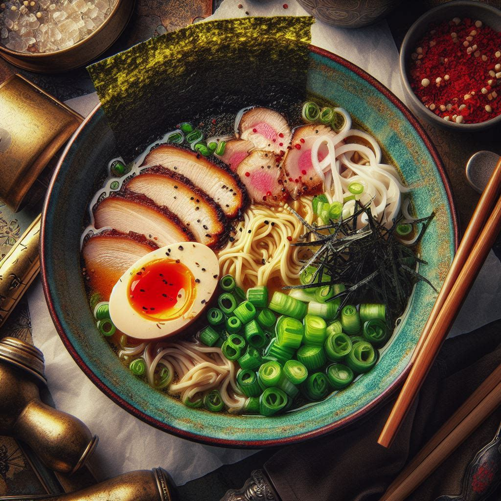

Ramen

Description
Ramen is a Japanese noodle soup dish that has gained immense popularity
worldwide. It typically consists of wheat noodles served in a savory
broth, topped with various ingredients such as sliced meats, seaweed,
eggs, and green onions. Ramen is known for its rich, complex flavors and
comforting warmth, making it a beloved comfort food for many.
Ingredients
For the broth:
- 8 cups of chicken or pork broth
- 2 cloves of garlic, minced
- 1-inch piece of ginger, sliced
- 2 tablespoons soy sauce
- 1 tablespoon mirin (Japanese sweet rice wine)
- 1 tablespoon sake (Japanese rice wine)
- Salt to taste
For the noodles and toppings:
-
4 packs of fresh or dried ramen noodles (or substitute with spaghetti if
unavailable)
- Sliced cooked pork belly, chicken, or tofu (for protein)
- Soft-boiled eggs, halved
- Sliced green onions
- Nori (seaweed sheets), torn into small pieces
- Corn kernels (optional)
- Bamboo shoots (optional)
- Bean sprouts (optional)
Steps
-
In a large pot, combine the chicken or pork broth, minced garlic, sliced
ginger, soy sauce, mirin, and sake. Bring the broth to a simmer over
medium heat.
-
Once the broth is simmering, reduce the heat to low and let it simmer
gently for about 30 minutes to allow the flavors to meld together. Taste
the broth and adjust the seasoning with salt if needed.
-
While the broth is simmering, prepare your toppings. Cook the protein of
your choice (pork belly, chicken, or tofu) and set aside. Soft-boil the
eggs, peel them, and halve them. Slice the green onions and prepare any
other toppings you desire.
-
Cook the ramen noodles according to the package instructions. If using
fresh noodles, they usually only need to be cooked for a few minutes in
boiling water. If using dried noodles, follow the cooking time on the
package.
-
Once the noodles are cooked, drain them and divide them among serving
bowls.
-
Ladle the hot broth over the noodles in each bowl, making sure to
distribute the garlic and ginger evenly.
-
Arrange your desired toppings on top of the noodles and broth. This can
include the cooked protein, soft-boiled eggs, sliced green onions, nori,
corn kernels, bamboo shoots, and bean sprouts.
- Serve the ramen hot and enjoy!